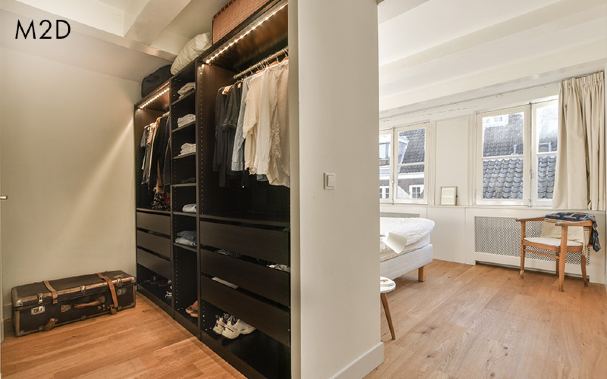
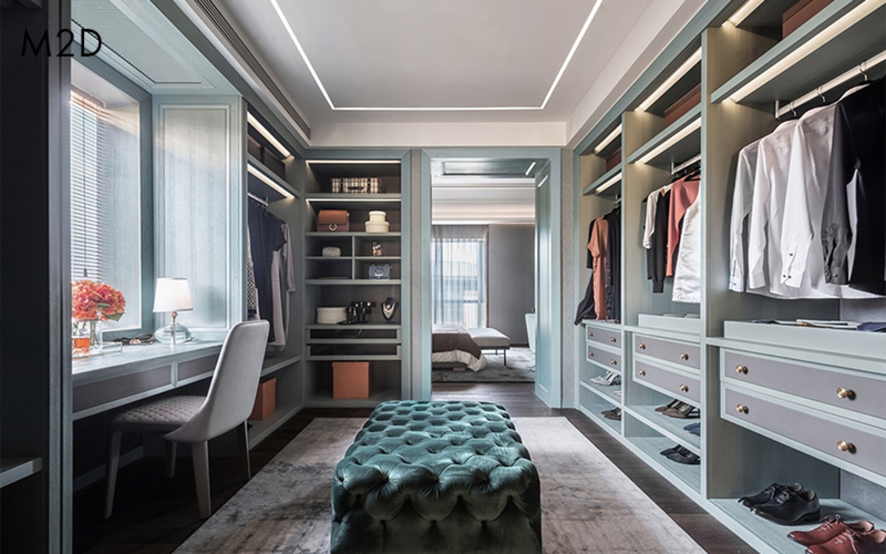
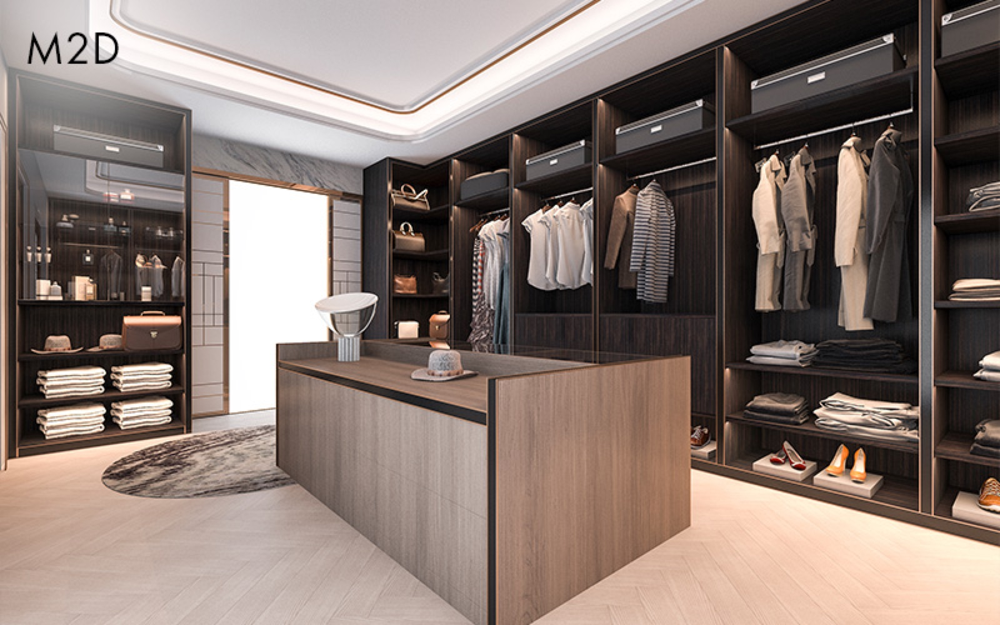
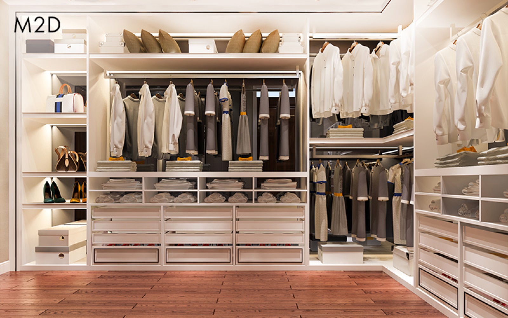

Key Takeaways:
A well-planned HDB walk-in wardrobe adds a touch of luxury and practicality to your master bedroom.
Smart layout choices like partition walls and galley-style wardrobes help maximise space.
Opting for open-concept storage and floor-to-ceiling units increases accessibility and storage capacity.

Designing a HDB walk-in wardrobe may sound like a stretch given the space constraints of a typical flat, but with the right planning, it is entirely achievable, even in a master bedroom. This is something that can be incorporated into an interior design for a 5-room HDB flat that is more generous with space, or even a smaller 3-room flat. Either way, clever design can help you carve out a functional, stylish space for your clothes and accessories.
In this article, we explore practical tips to help you integrate a walk-in wardrobe into your HDB flat without overcrowding the room. From layouts and partitions to finishes and functionality, the goal is to create a wardrobe zone that feels seamless and makes your daily routine easier and more comfortable.
1. Use a Partition Wall to Create a Dedicated Wardrobe Zone

Making your HDB walk-in wardrobe work starts with defining your wardrobe area using a partition wall. This can be a solid divider, a half-height wall, or even a glass panel to subtly separate the sleeping area from the wardrobe space. Not only does this provide visual definition; it also gives the impression of a separate room within your master bedroom.
In Singapore, many homeowners find that using sliding or frosted glass partitions preserves natural light whilst maintaining privacy. A partition wall also makes it easier to customise storage and lighting specific to the wardrobe area, such as spotlighting or warm LED strips.
2. Choose an L-Shaped or Galley Layout

The configuration of your HDB walk-in wardrobe should suit the dimensions of your room. Two layouts that work particularly well are L-shaped and galley-style designs.
An L-shaped wardrobe uses two adjoining walls, making efficient use of corner space while allowing for both hanging and shelving areas. A galley layout, on the other hand, features two parallel wardrobes with a central walkway. This is especially useful if you are converting a section of your master bedroom using a partition wall, as it provides a corridor-like effect that feels more like a dedicated dressing space.
These configurations can be adapted to suit most interior design for resale HDB flats or even BTO homes with more space constraints.
3. Go for Open-Concept Storage or Sliding Doors

When planning your walk-in wardrobe, one of the biggest design choices is whether to go for open shelving or closed cabinetry. Open-concept storage has the advantage of easy access and visual openness, making small spaces feel less confined. It also encourages you to stay organised, as clutter becomes more visible.
If you prefer a cleaner look, consider using sliding doors instead. They save space compared to swing doors and come in a variety of finishes, such as wood veneer, mirrored glass, or laminate, to match the theme of your room. Some couples prefer a mix of both open shelves for daily items and closed compartments for less-used belongings.
Whichever you choose, it is important to ensure that the wardrobe design complements the rest of your HDB home renovation for a more cohesive result.
4. Build Floor-to-Ceiling for Maximum Storage

Every centimetre counts when you are planning for a HDB walk-in wardrobe, so we recommend extending your wardrobe all the way up to the ceiling to maximise vertical space. The upper sections can be used to store seasonal clothing, luggage, or seldom-used items.
This approach is particularly suitable for homes that lack existing storage. Incorporating floor-to-ceiling cabinetry also provides a more built-in, customised look, making your wardrobe feel intentional rather than improvised.
You may also consider including integrated lighting, pull-down rods, or modular shelves to enhance usability, especially if more than one person will be using the wardrobe daily.
Fitting a HDB walk-in wardrobe into your master bedroom is all about utilising smart zoning design strategies. By using a partition wall, selecting the right layout, and building upwards, you can create a wardrobe area that is both functional and beautiful.
If you are looking for contractors with the right expertise to seamlessly pull off a walk-in wardrobe in your flat, look no further than M2D Design and Consultancy. Our team understands the specific needs of HDB home renovation projects, and how to execute them successfully. Regardless of the size of your flat, we can bring your dream home to life.
For more information about our services and how we can support you, please contact us today.